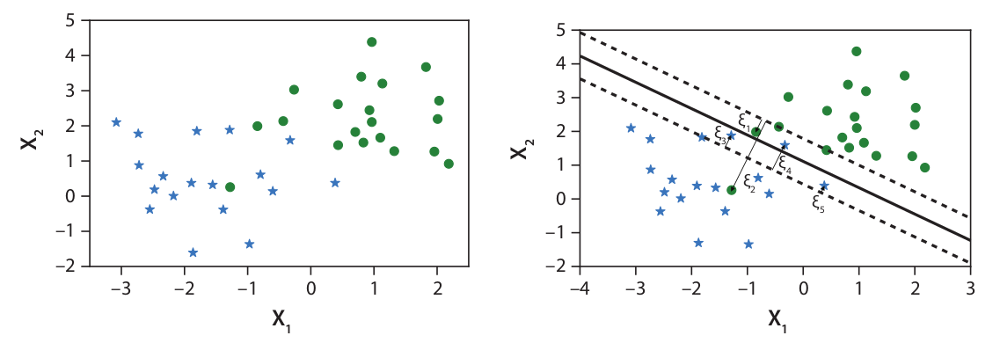

# Support Vector Machines ## Methods and Algorithms for Machine Learning **Jorge Enrique García Farieta** *Mathematics Department*
## Lecture Outline 1. **Introduction to SVM** 2. **Mathematical Foundations** 3. **Hard vs Soft Margin** 4. **Lagrange Multipliers & Optimization** 5. **Kernel Functions & Kernel Trick** 6. **Scikit-learn Implementation** 7. **Hyperparameter Tuning** 8. **Model Evaluation** 9. **Practical Examples with Iris Dataset** 10. **Exercises & Homework**
## What is Support Vector Machine? - **Supervised learning algorithm** for classification and regression - **Goal**: Find the optimal hyperplane that separates classes - **Key idea**: Maximize the margin between classes - **Advantages**: - Effective in high dimensions - Memory efficient (uses support vectors) - Versatile (different kernels) - **Applications**: Text classification, image recognition, bioinformatics
## Geometric Intuition **Which one do you think is a better classification?** <p class="fragment">Exercise: Why do you feel (B) gives a better classification?</p> <p class="fragment">The decision boundary in (B) leaves a relatively large distance from both of the clusters. Intuitively, this minimizes the probability of misclassification.</p> <p class="fragment">With the intuition above, we have two expectations from an ideal linear decision boundary:</p> <ul> <li class="fragment">To segregate the samples from different classes as much as possible.</li> <li class="fragment">To maximize the distances of samples from the decision boundary.</li> </ul>
## Geometric Intuition - **Hyperplane**: Decision boundary separating classes - **Margin**: Distance between hyperplane and closest data points - **Support Vectors**: Data points on the margin boundaries
## Mathematical Formulation: Linear SVM A decision function that is linear in the input $f(\mathbf{x})=\mathbf{w}^T \mathbf{x}+b$ The vector $\mathbf{w}$ is the weight vector; $b$ is the bias, and $\mathbf{w}^T\mathbf{x}$ is the dot product between the weight vector and any input example $\mathbf{x}$. The decision boundary is defined by **Hyperplane equation**: $w^T x + b = 0$ in other words, it is where the decision function vanishes. The hyperplane defined by this equation divides the space into two according to the sign of the discriminant function $f(x)$. **Classification rule**: $$\text{class} = \text{sign}(w^T x + b)$$ **Margin**: Distance from point to hyperplane $$\text{margin} = \frac{|w^T x + b|}{||w||}$$ **Goal**: Maximize margin = Minimize $||w||$
## Hard Margin SVM **Optimization Problem**: $$\min_{w,b} \frac{1}{2}||w||^2$$ **Subject to constraints**: $$y_i(w^T x_i + b) \geq 1, \quad i = 1,\ldots,n$$ - Assumes **linearly separable** data - All points correctly classified with margin ≥ 1 - **Problem**: No solution if data not separable!
## Soft Margin SVM **Allow misclassification** with slack variables $\xi_i$:  This data set cannot be exactly separated by a line (left), but we can obtain a rea- sonably well-behaved classifier by allowing some examples to lie within the margin and some misclassifications to be near the boundary. These are assigned a penalty in the loss function that is proportional to the distance ξ i to the margin of the corresponding class (right).
## Soft Margin SVM **Allow misclassification** with slack variables $\xi_i$: $$\min_{w,b,\xi} \frac{1}{2}||w||^2 + C \sum_{i=1}^{n} \xi_i$$ **Subject to**: $$y_i(w^T x_i + b) \geq 1 - \xi_i, \quad \xi_i \geq 0$$ - **C**: Regularization parameter - **Large C**: Hard margin (less misclassification) - **Small C**: Soft margin (more misclassification)
## Effect of C Parameter <img src="https://ppl-ai-code-interpreter-files.s3.amazonaws.com/web/direct-files/fc70d8c16a45e621eecdd0a0dab1285e/7358b53d-ea96-4178-a805-f44a22cdc446/23bd9ae9.png" alt="SVM Decision Boundaries" style="width: 70%; height: auto;"> **C parameter controls the trade-off**: - **Bias vs Variance** - **Complexity vs Generalization**
## Exercise: Optimization Problem Using the result above for the hard-margin SVM: $$ \min_{\mathbf{\beta}, \beta_0} \quad \frac{1}{2} \|\mathbf{\beta}\|^2 \quad \text{subject to} \quad y_i(\mathbf{\beta}^T \mathbf{x}_i + \beta_0) \geq 1 \quad \forall i $$ Why do we minimize $\frac{1}{2} \|\mathbf{\beta}\|^2$ instead of $\|\mathbf{\beta}\|$? ## Exercise: Margin Width Derivation Show that the distance $d$ from a point $\mathbf{x}$ to the hyperplane $\mathbf{\beta}^T \mathbf{x} + \beta_0 = 0$ is: $$ d = \frac{|\mathbf{\beta}^T \mathbf{x} + \beta_0|}{\|\mathbf{\beta}\|} $$ Use this to argue that maximizing the margin is equivalent to **minimizing** $\|\mathbf{\beta}\|$.
## Lagrange Multipliers Method $$ \begin{aligned} &\min_{\mathbf{\beta}, \beta_0} \quad && \frac{1}{2} \|\mathbf{\beta}\|^2 \\\\ &\text{subject to} \quad && y_i (\mathbf{\beta}^T \mathbf{x}_i + \beta_0) \geq 1 \quad \text{for } i = 1, \dots, n \end{aligned} $$ The **Lagrange multiplier $\alpha_i \geq 0$** for each constraint: $$ y_i (\mathbf{\beta}^T \mathbf{x}_i + \beta_0) \geq 1 $$ Then we define the **Lagrangian**: $$ \mathcal{L}(\mathbf{\beta}, \beta_0, \mathbf{\alpha}) = \frac{1}{2} \|\mathbf{\beta}\|^2 - \sum_{i=1}^n \alpha_i \left[ y_i (\mathbf{\beta}^T \mathbf{x}_i + \beta_0) - 1 \right] $$ Here: * $\mathbf{\alpha} = (\alpha_1, \dots, \alpha_n)$ * The Lagrangian combines the **objective** and the **constraints** ** Karush-Kuhn-Tucker (KKT) Conditions**: 1. $\frac{\partial L}{\partial w} = 0 \Rightarrow w = \sum_{i=1}^{n} \alpha_i y_i x_i$ 2. $\frac{\partial L}{\partial b} = 0 \Rightarrow \sum_{i=1}^{n} \alpha_i y_i = 0$ 3. $\alpha_i \geq 0$, $\alpha_i[y_i(w^T x_i + b) - 1] = 0$
## **Example: Maximize a Function on a Circle** Find the **maximum** and **minimum** values of the function: $$ f(x, y) = xy $$ subject to the constraint: $$ x^2 + y^2 = 1 $$ This constraint is the **unit circle**, so the feasible region is compact (closed and bounded) — we are guaranteed to find both a **maximum and minimum**.
## **Exercise:** Find the **maximum** and **minimum** values of the function: $$ f(x, y) = x^2 + y^2 $$ subject to the constraint: $$ x + y = 1 $$
## Nonlinearly separable data and kernel functions This data set cannot be separated by a linear classifier (left), but we can turn the problem into a linearly separable one by mapping the points onto a three-dimensional space (right). The question that naturally arises is: How can we find the $\phi(x)$ transformation? And here the “magic” of kernel SVMs arises.
## Nonlinearly separable data and kernel functions Linear and kernel-based SVMs tend to be one of the most powerful and accurate supervised learning methods before “going neural”.
## Common Kernel Functions **Linear Kernel**: $$K(x_i, x_j) = x_i^T x_j$$ **Polynomial Kernel**: $$K(x_i, x_j) = (\gamma x_i^T x_j + r)^d$$ **RBF (Gaussian) Kernel**: $$K(x_i, x_j) = \exp\left(-\gamma ||x_i - x_j||^2\right)$$ **Sigmoid Kernel**: $$K(x_i, x_j) = \tanh(\gamma x_i^T x_j + r)$$ <img src="https://ppl-ai-code-interpreter-files.s3.amazonaws.com/web/direct-files/fc70d8c16a45e621eecdd0a0dab1285e/1c48bf18-ded1-48f0-9df5-eb1be5446991/fd993af9.png" alt="Kernel Functions Table" style="width: 70%; height: auto;">
## Regularization parameter C The parameter C is the penalty attributed to training examples that are either in the margin or misclassified.
## Scikit-learn Implementation ```python from sklearn.svm import SVC from sklearn.model_selection import train_test_split from sklearn.datasets import load_iris # Load data iris = load_iris() X = iris.data y = iris.target # Split data X_train, X_test, y_train, y_test = train_test_split( X, y, test_size=0.3, random_state=42) # Create and train SVM svm_model = SVC(kernel='rbf', C=1.0, gamma='scale') svm_model.fit(X_train, y_train) # Make predictions y_pred = svm_model.predict(X_test) ```
## Key SVM Parameters in Scikit-learn **Main parameters**: - **`kernel`**: 'linear', 'poly', 'rbf', 'sigmoid' - **`C`**: Regularization strength (default=1.0) - **`gamma`**: Kernel coefficient for RBF/poly/sigmoid **Gamma options**: - **'scale'**: 1/(n_features × X.var()) [default] - **'auto'**: 1/n_features - **float**: Custom value **Other parameters**: `degree` (poly), `coef0` (poly/sigmoid)
## Hyperparameter Tuning ```python from sklearn.model_selection import GridSearchCV # Define parameter grid param_grid = { 'C': [0.1, 1, 10, 100], 'gamma': ['scale', 'auto', 0.01, 0.1, 1], 'kernel': ['rbf', 'poly', 'linear'] } # Grid search with cross-validation grid_search = GridSearchCV(SVC(), param_grid, cv=5, scoring='accuracy') grid_search.fit(X_train, y_train) print(f'Best parameters: {grid_search.best_params_}') print(f'Best score: {grid_search.best_score_:.3f}') ```
## Model Evaluation ```python from sklearn.metrics import (classification_report, confusion_matrix, accuracy_score) # Evaluate model accuracy = accuracy_score(y_test, y_pred) print(f'Accuracy: {accuracy:.3f}') # Confusion matrix cm = confusion_matrix(y_test, y_pred) print('Confusion Matrix:') print(cm) # Classification report report = classification_report(y_test, y_pred, target_names=iris.target_names) print('Classification Report:') print(report) ```
## SVM: Pros and Cons **Advantages**: - Effective in high dimensions - Memory efficient (uses support vectors only) - Versatile (different kernels) - Works well with clear margin of separation **Disadvantages**: - Poor performance on large datasets - Sensitive to feature scaling - No probabilistic output - Choice of kernel and parameters critical
## Practical Tips **Data Preprocessing**: - **Always scale features** (StandardScaler, MinMaxScaler) - Handle missing values - Consider feature selection for high-dimensional data **Model Selection**: - Start with RBF kernel - Use cross-validation for parameter tuning - Consider linear kernel for text data/sparse features **Performance**: - For large datasets, consider LinearSVC - Use probability=True if you need probabilities
## Exercise: Implementation **Problem**: Compare SVM kernels on wine dataset **Tasks**: 1. Load wine dataset from scikit-learn 2. Implement SVM with linear, polynomial, and RBF kernels 3. Compare accuracy using cross-validation 4. Plot learning curves for each kernel
## Homework: Iris Dataset Analysis **Dataset**: Iris Dataset (150 samples, 4 features, 3 classes) **Tasks**: 1. Load iris dataset and split data (70/30) 2. Implement SVM with linear, polynomial, and RBF kernels 3. Compare performance using accuracy, precision, recall, F1-score 4. Visualize decision boundaries for 2D projections 5. Perform hyperparameter tuning using GridSearchCV 6. Create confusion matrices for each kernel 7. Write analysis report comparing results **Due**: Next week
## Summary **Key Takeaways**: - SVM finds optimal hyperplane by maximizing margin - Kernel trick enables non-linear classification - C parameter controls bias-variance tradeoff - Gamma parameter affects model complexity in RBF kernel - Feature scaling is crucial for SVM performance <!-- **Next Lecture**: Ensemble Methods - Random Forest & Gradient Boosting --> **Questions?**